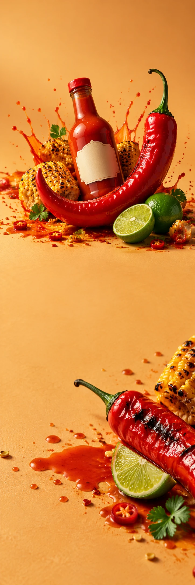

PITTA HEAT
Sauzen & foodSmaakcampagne
PITTA HEAT / MAKE YOUR LUNCH INTERESTING
EEN KLEIN
BEETJE VUUR.
Ontdek de sauzen PITTA HEAT / VAN DICHTBIJ
Druppel erbij.
Dag veranderd.
Over je ei. Naast je taco. Door dat ene restje van gisteren. Geef je favoriete eten een andere kant en ontdek welke smaak jij op tafel zet.
01Chili
02Limoen
03Een beetje lef
DOE MAAR
NOG EEN DRUPPEL.
Sommige dagen kunnen wel een extra draai gebruiken.
Ontdek de sauzen